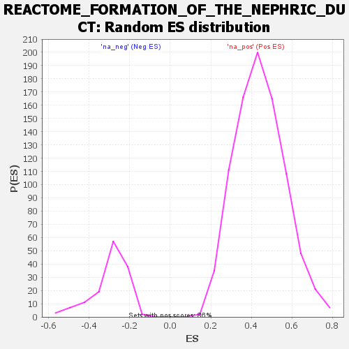

Profile of the Running ES Score & Positions of GeneSet Members on the Rank Ordered List
| Dataset | DGErankName |
| Phenotype | NoPhenotypeAvailable |
| Upregulated in class | na_pos |
| GeneSet | REACTOME_FORMATION_OF_THE_NEPHRIC_DUCT |
| Enrichment Score (ES) | 0.8686792 |
| Normalized Enrichment Score (NES) | 1.9616376 |
| Nominal p-value | 0.0 |
| FDR q-value | 0.00292752 |
| FWER p-Value | 0.029 |
| SYMBOL | RANK IN GENE LIST | RANK METRIC SCORE | RUNNING ES | CORE ENRICHMENT | |
|---|---|---|---|---|---|
| 1 | PAX8 | 3 | 18.200 | 0.3579 | Yes |
| 2 | GATA3 | 26 | 7.476 | 0.5036 | Yes |
| 3 | EMX2 | 48 | 5.151 | 0.6035 | Yes |
| 4 | PAX2 | 76 | 4.434 | 0.6890 | Yes |
| 5 | HOXB4 | 87 | 4.199 | 0.7710 | Yes |
| 6 | LHX1 | 286 | 2.948 | 0.8160 | Yes |
| 7 | HOXA6 | 610 | 2.238 | 0.8389 | Yes |
| 8 | CTNNB1 | 771 | 2.045 | 0.8687 | Yes |
| 9 | FGF2 | 1855 | 1.390 | 0.8252 | No |
| 10 | NPNT | 2086 | 1.294 | 0.8356 | No |
| 11 | MECOM | 4044 | 0.763 | 0.7225 | No |
| 12 | BMP4 | 6226 | 0.291 | 0.5855 | No |
| 13 | ID4 | 8589 | -0.050 | 0.4320 | No |
| 14 | OSR1 | 12060 | -0.346 | 0.2117 | No |
